Overview
First-Person Horror Game – Unreal Engine 5
Case File
First-Person Horror Game – Unreal Engine 5
First-Person Horror Game – Unreal Engine 5
Build Notes
Sanity amount is checked every second, based on the player Sanity level, Levels will be streamed Dynamically during Gameplay.


Increase in Sanity will cause player to feel hallucinating with slowing down all the player actions.
To show screen effects I’ve changed the post-process settings of FPS camera in First Person Blueprint for few seconds and made it back to normal.


Enemies can be seen through walls
Created a Post-Process Material and added in Material Asset for Post-Process Volume, changed the value with RMB clicked during gameplay.
This material when activated changed the whole into the b/w effect and shows the actors that has Stencil Value more than 1 in red colored even through the walls.
I only want to see enemies through the walls, so I changed the custom Stencil Depth value of Enemy actors to 2.


Player can be able to hide in the locker, will make enemy to forget about the player and behaves normal until sees again.


Used an Actor Component Blueprint to write down Target Lock system, attack mechanics including Combo attacks where player can be able to lock the camera to the specific enemy the player targeting to and attack.


Used an Anim Notifier Blueprint to play sound at each step and created physics materials for the specific type of the floor to adjust sound dynamically.
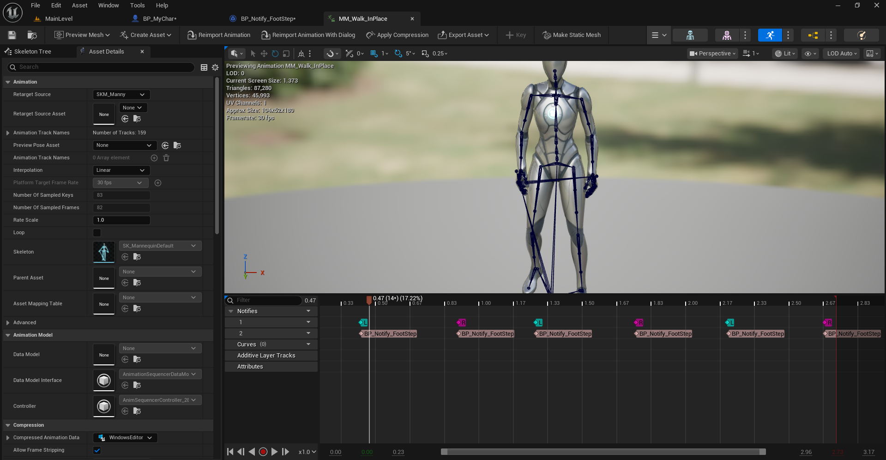
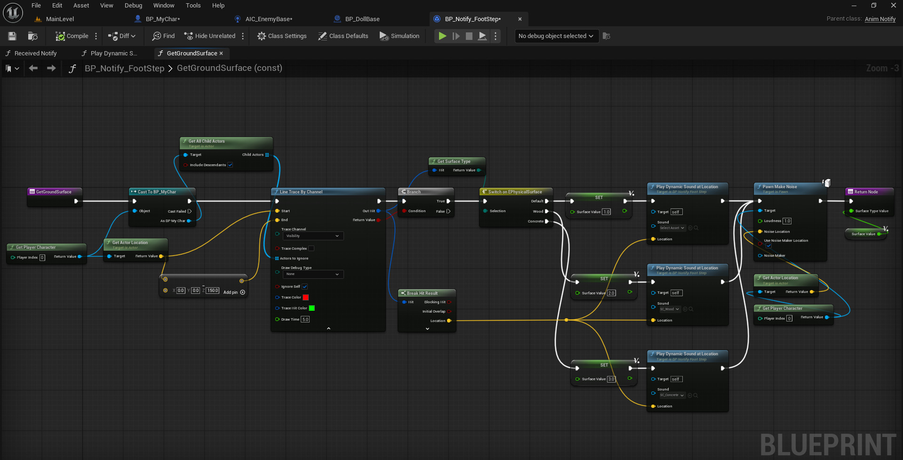
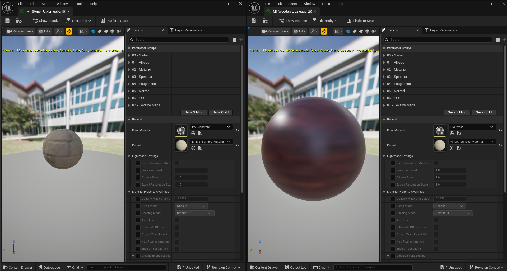
I designed the Quick Time Event (QTE) system using a combination of structures, enums, and macros for better organization and modularity.
I created an ENUM_EventState to define different event states such as Waiting, Success, TimeUp, and IncorrectKey. Then, I built multiple structures like S_EventData (for key input, screen position, and time tracking), S_CameraTransition (for smooth camera changes during QTEs), and S_EventWidget (for UI anchor, alignment, and offset details).
All these elements connect through the StartQuickTimeEvent Macro, which manages event flow—starting from player input detection, triggering UI feedback, checking success or failure conditions, and finally transitioning cameras smoothly based on results.
This setup allows each QTE to have its own customizable parameters like duration, screen position, and camera blend time while keeping the system reusable and easy to update.
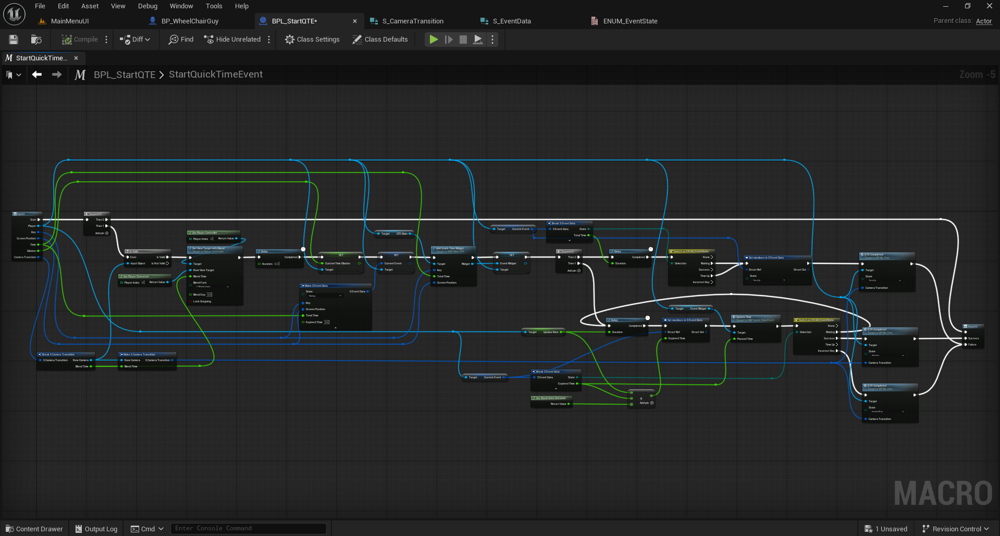
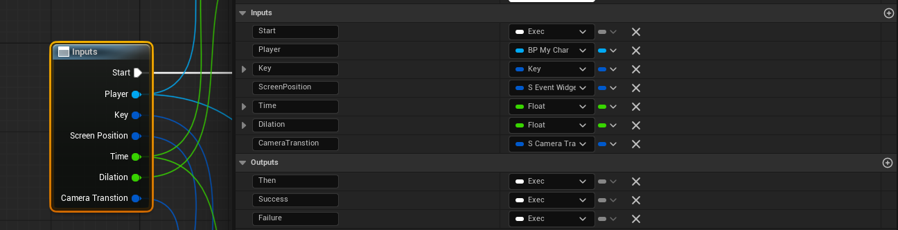
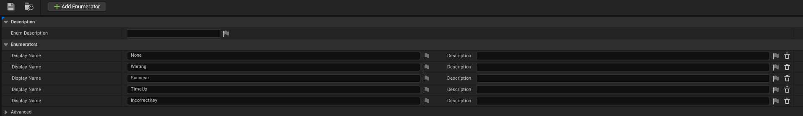
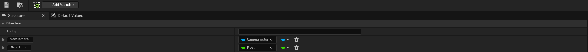
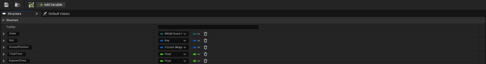
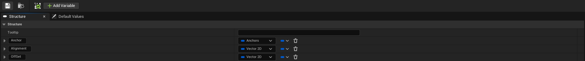
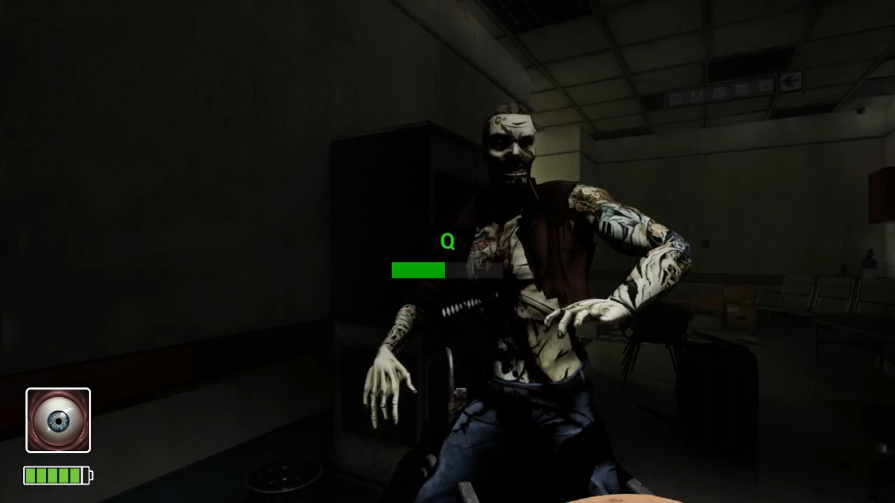
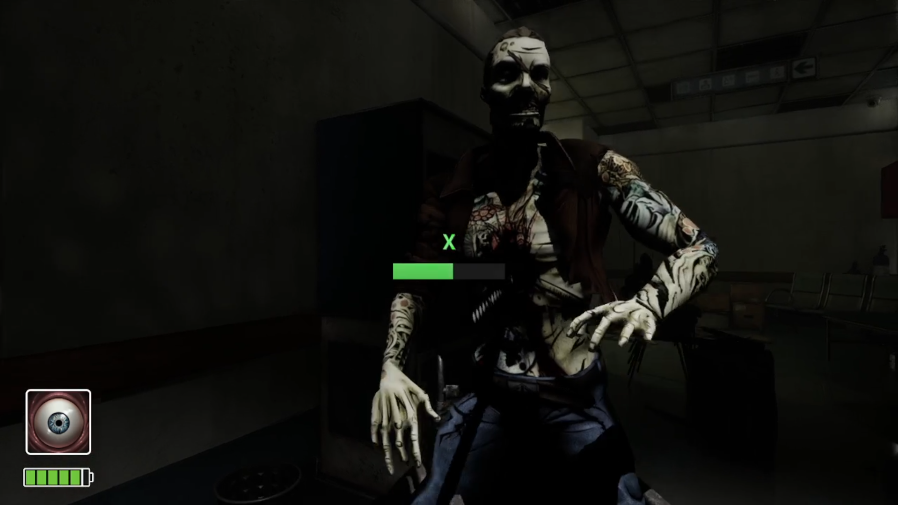
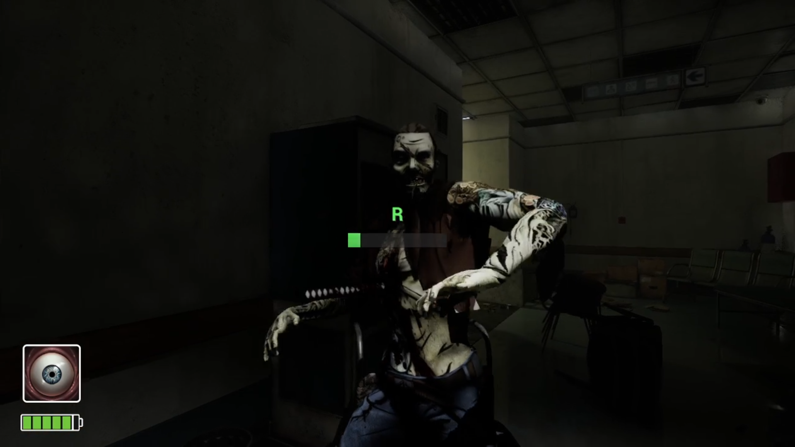
Created animated pop-up text for objectives, controls, and player instructions during gameplay. The text smoothly appears from the top-right corner of the screen with a sound effect.


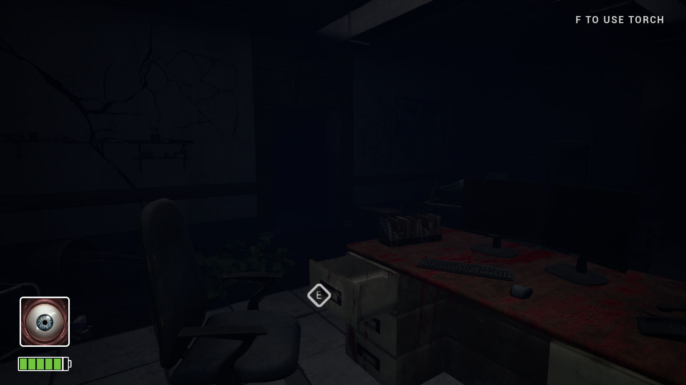